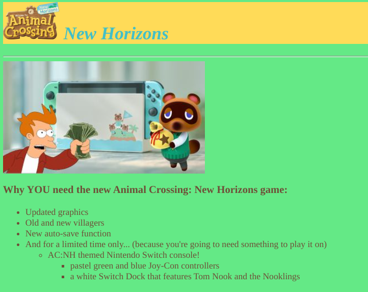
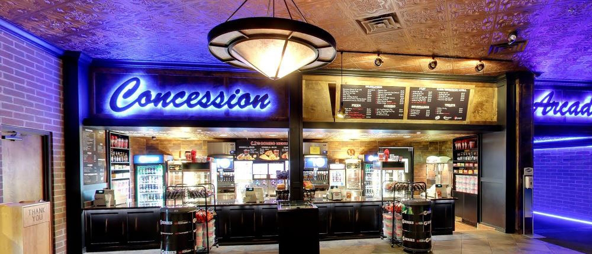
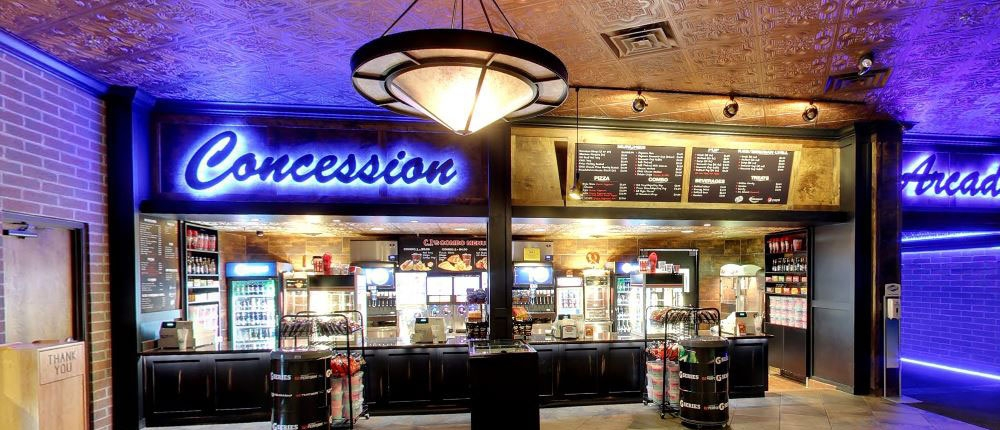

Ciara Stafford
I am currently a 3rd year at UCR. My major is Business Administration with a concentration in Marketing. I graduated high school in 2015 and went to Mount San Jacinto College from 2016-2018. From MSJC I recieved my Associates in Business Administration and Liberal Arts in Social Sciences.
Experience
Usher
• Escorted guests to seats for shows and performances
• Handed out programs
• Answered questions and assisted people
Consession Stand
• Took orders for food and beverage
• Presented prices and options
• Processed cash payments
Tutor
• Assisted students who had difficulties with their homework after school
• Provided additional tutoring if needed
Education
MSJC
MSJC
Portfolio



